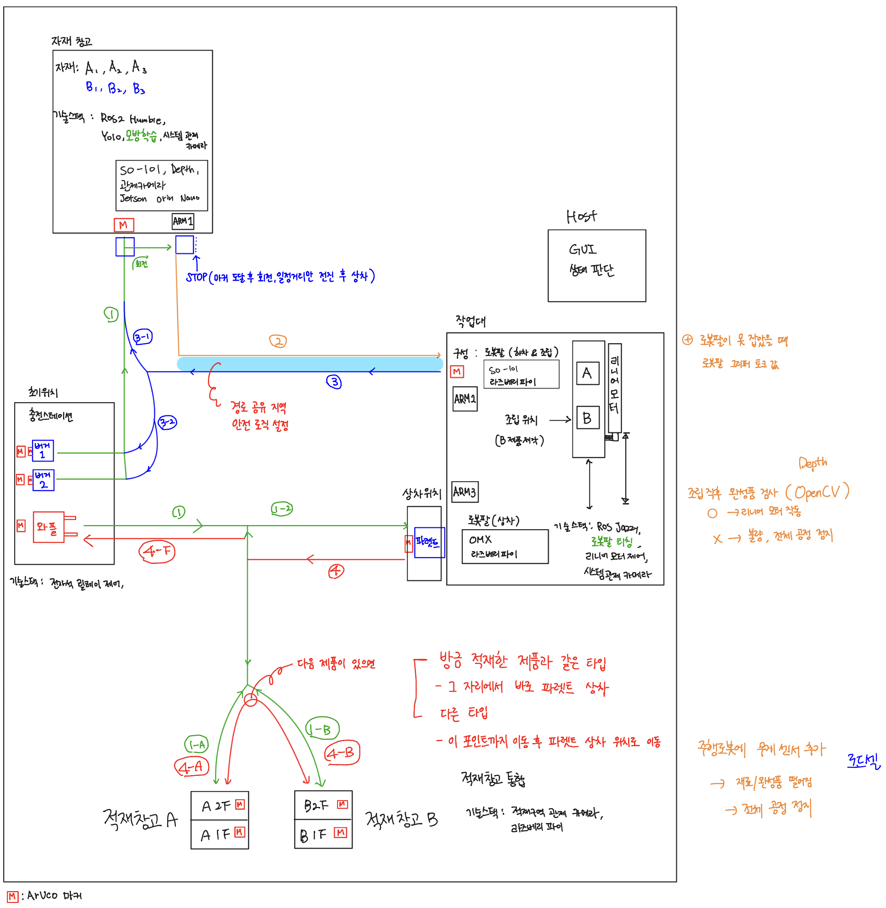
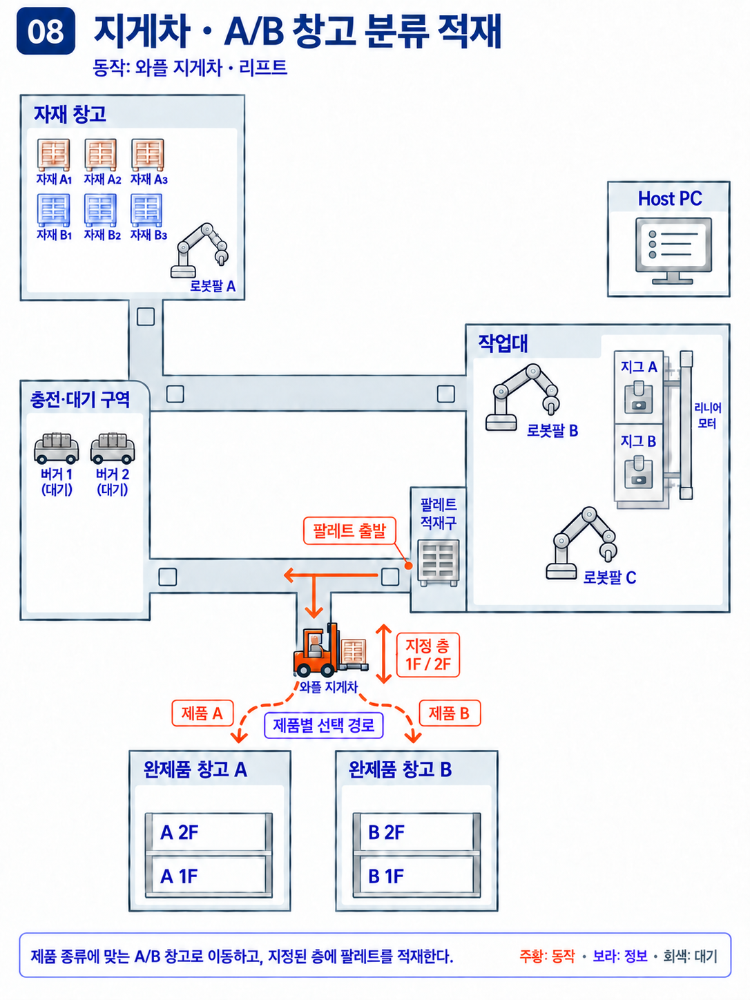
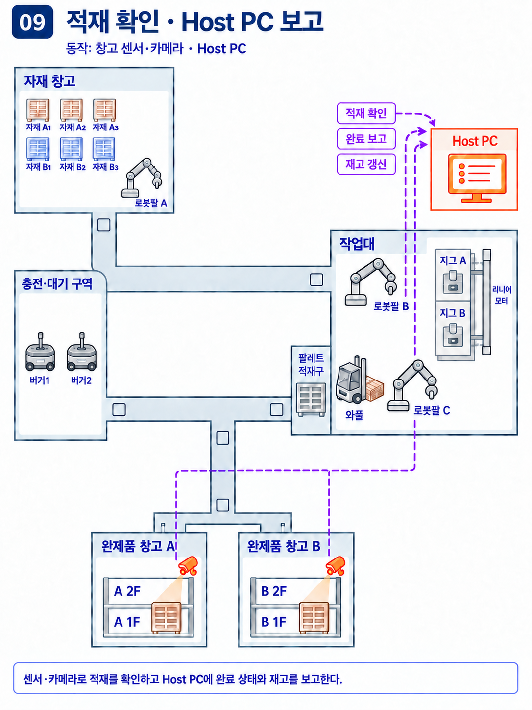

다중 로봇을 하나의 생산 공정으로
재료 재고 확인부터 조립·운반·A/B 창고 적재까지 연결하는 소형 스마트팩토리입니다.

전체 시스템
Host PC가 제품 A/B와 수량을 주문받고 재고와 창고 공간을 확인합니다. 로봇팔 A는 재료 상차, B는 하차·조립, C는 완제품 팔레트 상차를 담당합니다.
장치 간 작업 인계
재료 운반 로봇 2대, 제품별 지그를 선택하는 리니어 이송부, Waffle 기반 지게차가 공정을 연결합니다. 도착·도킹·정지를 확인한 뒤 다음 장치가 작업을 시작하도록 기획했습니다.
현재 단계
기획과 장치 구성을 진행 중입니다. 배치도는 동작 설명용 개념도이며, 전체 공정 통합과 반복 성능은 앞으로 검증할 항목입니다.
팀의 개발 계획과 적재 창고 구성
공정별 책임을 정리하고, 완제품이 어디에 정상 적재됐는지 확인하는 창고 구성을 담당합니다.

팀장 · PM
요구사항과 전체 시나리오를 정리하고 장치별 담당과 개발 계획을 조율했습니다. 상차·조립·이송·적재의 시작 조건과 완료 조건을 문서화했습니다.
Jetson Nano 기반 적재 창고
Jetson Nano를 활용한 적재 창고 구성을 맡았습니다. 기획상 A/B 창고의 칸 점유와 정상 적재 여부를 센서·카메라로 확인하고 Host PC에 전달하도록 역할을 정했습니다.
연동 기준
명령, 완료 보고, 센서 관측을 구분합니다. 대상 칸과 제품 종류, 관측 시각을 함께 다루며 보드 모델·센서 종류·통신 메시지는 팀 연동 과정에서 확정합니다.
공정 누락을 보완하고, 예외 처리를 설계
문서에서 확인되는 설계 보완과 검증 계획을 정리했습니다. 통합 동작의 해결 완료 실적과는 구분합니다.

발견 · 지그 선택 단계 누락
기술 설계 문서의 수정 이력에 공정라인 리니어 모터의 제품별 지그 A/B 선택 동작이 누락돼 있었던 내용이 남아 있습니다.
보완 · 조립 전 인터록
제품과 선택 지그의 일치, 위치 도달, 정지를 확인한 뒤 로봇팔 B가 조립을 시작하도록 기획에 반영했습니다. 이동 중이거나 지그가 다르면 조립을 보류하는 검증 항목도 추가했습니다.
검증 계획 · 적재 확인 불일치
센서·카메라와 적재 결과가 다르면 완료 수량 증가를 보류하고 목표 칸을 재확인하도록 설계했습니다. 중복 완료는 task_id 처리 이력으로 구분하는 안이며, 실기기 통합 검증은 진행 전입니다.